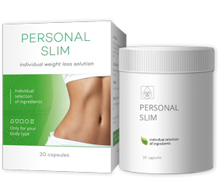

El abuso del nuevo producto para quema de grasa causa anorexia
Tratando de obtener un "cuerpo de supermodelo", muchas chicas pierden mucho más peso de lo que es aceptable. Hoy en día, es muy fácil perder peso, especialmente debido a la cantidad y variedad de productos para adelgazar disponibles en el mercado. Uno de ellos, un potente quemador de grasa natural llamado Personal Slim, apareció recientemente en el mercado y alarmó a la comunidad médica.
La aparición de Personal Slim en el mercado español ha provocado un aumento en los casos de pérdida de peso extrema. Para obtener el cuerpo perfecto y deshacerse de los kilos de más, los consumidores usan dosis mucho más altas de las recomendadas. Es por eso que las personas que anteriormente han usado productos menos efectivos en dosis más altas de lo que es aceptable, se acostumbraron y cometieron el mismo error con Personal Slim.
Este quemador de grasa destruye las células de grasa en el cuerpo, por lo que los consumidores deben seguir cuidadosamente las instrucciones. Sin embargo, en cuanto ven los resultados de la primera semana, comienzan a descuidar las instrucciones para perder peso de forma más rápida.
Todos los que han perdido peso con la ayuda de Personal Slim, informaron acerca de la pérdida excesiva de peso de 5 kg en una semana y hasta 12 kg en un mes. Teniendo en cuenta estos resultados fantásticos, los consumidores pierden el control de sus hábitos de alimentación y deben comer alimentos con alto contenido calórico, para compensar la pérdida de peso. Incluso después de volver a la normal nutrición, continúan perdiendo peso.
Un estudio alemán de laboratorio, demostró que:
Personal Slim causa una pérdida de peso extrema y acelera el metabolismo hasta 5 veces. Las mujeres de todo el mundo toman una sobredosis de Personal Slim precisamente por la excepcional efectividad de estas cápsulas .
¿Por qué pierdes peso con Personal Slim?
1. Los ingredientes naturales contenidos en estas cápsulas aceleran el metabolismo y ayudan a reducir la cantidad de grasa en el cuerpo. Como resultado, las grasas se queman más rápido sin hacer ejercicio, pero al mismo tiempo, el cuerpo es capaz de absorber los microelementos necesarios.
2. Extracto de té verde ayudan a suprimir el hambre y aumentar los niveles de energía.
Para una pérdida de peso adecuada (de 5 a 12 kg por mes), los consumidores deben beber 1 cápsulas dos veces al día.
Una encuesta realizada entre personas que lograron perder peso, confirmó claramente que todos tomaron dosis mucho más altas de las recomendadas; consumieron Personal Slim 3-5 veces más de lo requerido. Esto explica por qué pierden peso demasiado rápido, perdiendo peso de 7 a 12 kg por semana. Al obtener resultados tan impresionantes, les fue muy difícil detenerse y, por lo tanto, continuaron perdiendo peso demasiado rápido.
El Centro Nacional de Nutrición advierte que una pérdida de peso tan abrupta y rápida puede provocar graves problemas de salud.
En comparación con otros productos para adelgazar, Personal Slim es actualmente el quemador de grasa más potente con una tasa de éxito del 97.8%. Sin embargo, existe el riesgo de un aumento de sobredosis. Recuerde: necesita perder peso lentamente y mantener su salud. Si decide probar Personal Slim para perder unos kilos, beba solo 2 cápsulas dos veces al día, independientemente de su peso.
¡Cuídate!
Por favor, Reserve con el precio de la promoción antes de que esta oferta se pasa al siguiente lector! Tarifas preferenciales de usted terminarán los siguientes:
:
Comentarios
Escuché sobre este producto, pero cuando busqué estas cápsulas en Internet, siempre me encontraba con sitios extraños. Finalmente encontré un sitio confiable. El operador ya me llamó y me dijo exactamente cuándo se me entregará Personal Slim. Estoy feliz ¡He hecho demaciadas dietas inútiles! GRACIAS!
Hola a todos ¡Lo que dicen es verdad! ¡Personal Slim, la cual ordené desde el sitio oficial gracias al consejo de un amigo, da resultados increíbles! Llevo dos meses tomando estas cápsulas: durante la primera semana perdí 3 kg, en la segunda - 4 kg, durante la tercera y la cuarta - ¡otros 8,5 kg y así sucesivamente! Puedes ver mis fotos abajo.
Estas cápsulas funcionan! Yo misma soy la prueba real. ¡He estado tomando Personal Slim por dos semanas y ya he perdido peso! Hasta la grasa de las caderas desaparecio, fantástico! No quiero publicar fotos, primero quiero lograr mi objetivo. Tomo las cápsulas de acuerdo con las instrucciones dos veces al día, y todo está bien.
Hace tres meses, mi nutricionista me recomendó estas cápsulas, por lo que comencé a tomarlas. ¡Perdí 20 kg! Este es un gran producto, porque rápidamente bajé todos los kilos que gané durante el embarazo. Realmente vale la pena, recomiendo Personal Slim a todos. ¡Los resultados no tardarán en llegar!
¡No puedo creerlo! Ya las ordené. Te contaré sobre mis éxitos cuando comience a tomarlas. Ahora mi peso es de 85 kg con una altura de 160 m. Personalmente, creo que los quemadores de grasa funcionan, incluso si tenemos que tener en cuenta factores individuales como el metabolismo y la adhesión al régimen. Quiero perder peso y encontrar a un chico, estoy tan harta de estar sola :(
He probado muchas dietas, pero no he perdido peso y ya he perdido la esperanza de que esto suceda. Escuché sobre las cápsulas de Personal Slim, pero no creía que funcionaran ... Mi nutricionista confirmó su efectividad y dijo que funcionan bien si sigues las instrucciones. Muchas gracias por el consejo, ¡espero que todo salga como planeo!
Ya he bajado 11 kg con estas cápsulas. Seguí claramente todas las instrucciones y las compré en el sitio web oficial. Incluso mi celulitis ha desaparecido. Estas cápsulas son ideales para aquellos que quieren perder peso. Actúan rápidamente y después de perder peso los kilos no regresan. ¡Ordénalos y verás qué tan rápido pierdes peso! No te rindas, puedes perder peso.
Con Personal Slim realmente pierdes peso, perdí 30 kg en 3 meses, fue muy fácil. No me limité específicamente en la comida, constantemente bebía estas cápsulas. En mi opinión, este es el mejor quemador de grasa. Ahora he cambiado mi ropa por completo. Estas cápsulas me las recomendó mi amigo cuando trabajé en Munich. Y ahora yo misma las recomiendo a todos. ¡Mira mis fotos!
Estoy muy feliz por ustedes chicas! Empezaré a beber estas cápsulas mañana, y sé que todo cambiará. Pedí varios paquetes de cápsulas Personal Slim para alcanzar mi peso ideal.
¡Gracias por compartir tu experiencia! Es increíble, realmente espero que Personal Slim también me ayude, ¡gracias!
Hola! También estoy muy satisfecha con los resultados de estas cápsulas, todos los comentarios indican que eficaz es Personal Slim para perder peso. Noté una gran pérdida de peso en solo una semana, las beberé hasta obtener los resultados deseados. Buena suerte a todas, definitivamente perderás peso también.
Siempre me he acomplejado debido al exceso de peso, por lo que Personal Slim es una oportunidad para cambiar completamente para mejor. Realmente espero que estas cápsulas me ayuden! Pedí varios paquetes a la vez.

- Periodista nutricionista
- Gianluca Nobili es el autor de varios libros que han ayudado a miles de personas.
Los resultados del estudio en un mes con la participación de 17 personas con sobrepeso de más de 10 kg:
- Todos los participantes perdieron de 6 a 13 kg.
- El 97% reportó una mejoría en su condición física.
- Mejora el funcionamiento del hígado y páncreas
- y, por lo tanto, la aceleración del metabolismo.
Los experimentos han demostrado que Personal Slim es un producto importante que ayuda a pacientes con sobrepeso y previene problemas con el hígado y páncreas.